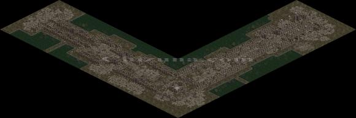
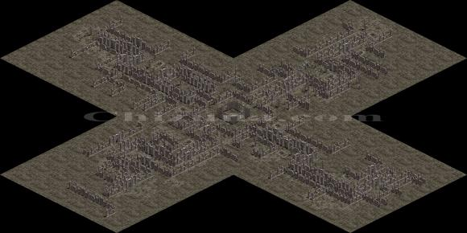
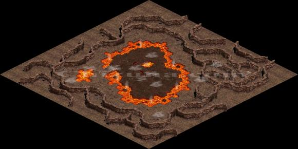
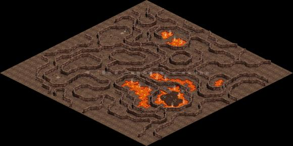

|
2003年5月19日
50級任務獎勵部分資料
來源：Lineage Playforum
日文翻譯：Minimomi's Lineage
雖然在韓國測試伺服器更新了50級任務炎魔的逆襲，但由於該任務要四個職業的50級角色一起才能夠解，因此在韓國測試伺服器上仍未有玩家通過試煉，而最大困難很明顯是在定期刪除資料的測試伺服器上，那裡找來50級的王族呢？雖然仍未有玩家完成試煉，但Playforum的記者得到以下可信的資料：
1. 50級任務獎勵的等級限制為50級。
2. 50級任務獎勵全部都可以用武卷加武的。
3. 此任務是否必須要有50級或以上的王族才能夠成功完成呢？官方正在檢討和研究可行的改變，將來有可能會修正。
4. 傳說的武器（50級任務獎勵）會否比目前的武器強呢？這點現在仍未有資料。
5. 傳說的武器的能力值可能隨時會更改，因此現在仍未公開有關資料。
50級任務流程
來源：Nue's Lineage
1. 首先需要湊齊4種職業的50級玩家各一人。
2. 到象牙塔-3F找迪嘉勒頂公爵，他會請要你殺死古代惡魔-炎魔。
ps:必須確認4個人都有跟公爵接任務，如有一人沒按，將無法進行試練
3. 到傲慢之塔-2F找蘭達，請派王族與他對話，他會要求王族湊齊4種職業的50級玩家各一人。
ps:此王族須已50級且已和公爵接任務，況且他也只肯和王族對話，其他職業跟他對話只有說聽故事的份
4. 湊齊4種職業的50級玩家各一人之後，請派王族與蘭達對話，就能按選項傳送到古代的空間。
ps:此王族須已50級且已和公爵接任務，況且他也只肯和王族對話，其他職業跟他對話只有說聽故事的份
5. 在古代的空間，第一步就是去尋找古代人。
6. 找到古代人後，與他對話，即有選項能傳送到炎魔的住所。
7. 到了炎魔的住所，需要走到最底層，在底層就能遇到古代惡魔-炎魔。
ps:途中會有炎魔的小嘍嘍出來阻擾
8. 四人合力打敗炎魔之後，即可取得炎魔之劍、炎魔之眼、炎魔之爪、炎魔之心。
ps:炎魔之劍是騎士的道具、炎魔之眼是法師的道具、炎魔之爪是妖精的道具、炎魔之心是王族的道具
9. 回到象牙塔-3F找迪嘉勒頂公爵後，各職業即可領取到傳說中的武器當做此次試煉的謝禮。
10. 騎士需要把天空之劍和炎魔之劍交給迪嘉勒頂公爵，即可得死神之刃。
11. 法師需要把古代人的智慧和炎魔之眼交給迪嘉勒頂公爵，即可得瑪那水晶球。
12. 妖精需要把水精靈之弓和炎魔之爪交給迪嘉勒頂公爵，即由烈焰之弓和烈焰之劍這2種武器選一種。
13. 王族需要把炎魔之心交給迪嘉勒頂公爵，即可得黃金錫杖。
另外以下可能是與此任務有關的地圖，來自Jaja no ouchi：



 |